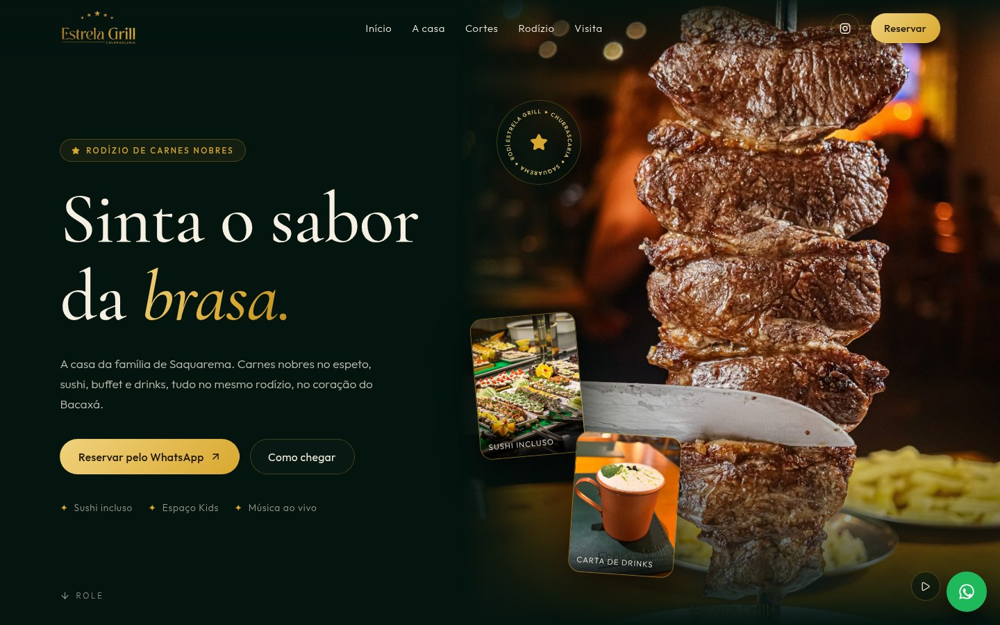
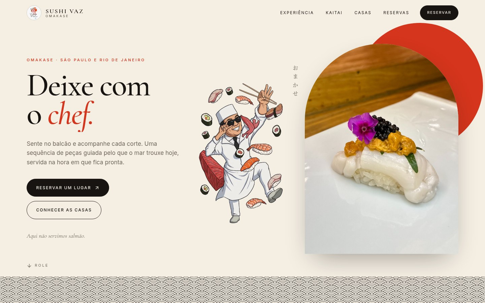

Estrela Grill
Site da churrascaria Estrela Grill.
No ar
Abrir o site
Ver o código
Cada projeto tem o site publicado ou o código aberto no GitHub.

Site da churrascaria Estrela Grill.
No ar
Site do restaurante Sushi Vaz.
No arPlataforma para a comunidade de Free Fire: recrutamento, equipes e conexão entre jogadores.